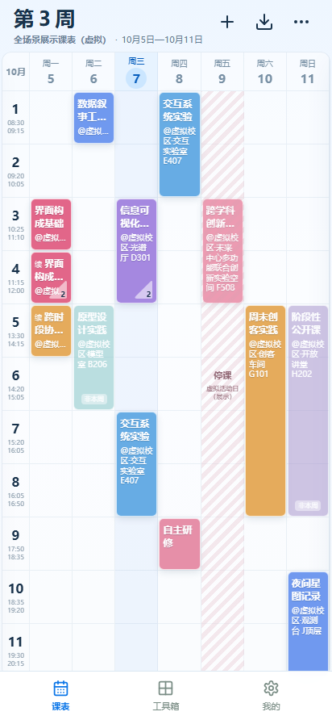
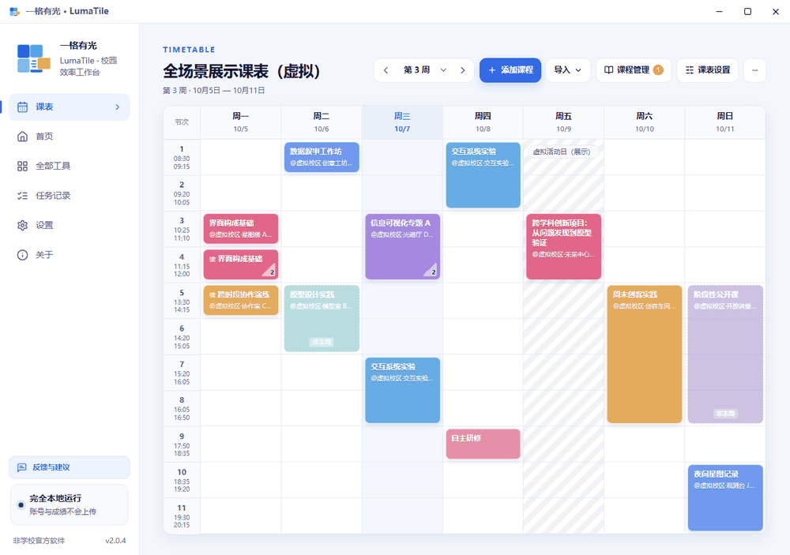

一周安排，清晰展开
直接读取教务课表，按周查看课程与上课地点。单双周、重叠课程，也能有条不紊。
为齐鲁工业大学同学准备的校园工具。
把一周安排、每门成绩和学分进度，整理成清晰的日常。
Android · Windows · macOS / 本地处理，安心使用

产品实际界面 · 展示课表与成绩均为合成数据
LESS FRICTION. MORE CLARITY.
从下一节课，到这一学期。常用的事，放在一起。
直接读取教务课表，按周查看课程与上课地点。单双周、重叠课程，也能有条不紊。
导出分项成绩，查看总评与成绩构成。自由勾选参与计算的课程，让 GPA 随选择即时更新。
对照培养方案，梳理综合素质选修课的已修、在修与模块缺口，为下一次选课做好准备。
MADE FOR YOUR EVERYDAY
切换周次，预览后续安排；编辑课程、管理多份课表。课表备份还可以在电脑与手机之间互通。
实际产品演示 / 合成数据
YOUR DATA STAYS YOURS
你自己登录，应用在本地处理课表与成绩。
不提供代登录服务，也不建设成绩云端存储。
A LITTLE LIGHT, ON EVERY SCREEN
选一个平台，开始更轻松的校园生活。
Android 7.0 及以上
随手查课表，桌面看课程。
让一周安排随身而行。
64 位 Windows
大屏查看课表与成绩，
学习规划更加从容。
Apple Silicon · M 系列芯片
熟悉的校园工具，
也能在你的 Mac 上使用。
当前提供 GitHub 下载
用手机浏览器点击「下载 Android 版」。
按系统提示，允许此浏览器安装未知应用。
完成安装后，可关闭该浏览器的安装权限。
查看历史版本与更新记录 ↗目前提供 Android、Windows 和 macOS 版本
不是。LumaTile 是面向齐鲁工业大学学生的非官方工具，与学校及教务系统服务商不存在隶属、授权或合作关系。目前仅适配齐鲁工业大学教务系统。
个人学习、交流和非商业使用无需付费。项目源码公开在 GitHub，欢迎反馈与贡献；商业使用需要开发者明确书面许可，具体以仓库使用说明为准。
请在浏览器下载记录或系统文件管理器中打开完整下载的 APK，并按系统提示允许当前来源「安装未知应用」。需要 Android 7.0 及以上，以及 Chromium 80 及以上的系统 WebView。安装后可关闭来源安装权限；若仍失败，请附系统版本与错误提示反馈。
Windows 安装包尚未数字签名，可能出现 SmartScreen 提示。macOS 安装包尚未签名或公证，可先尝试打开，再按系统提示在「系统设置 → 隐私与安全性」中确认。请核对安装包来源，无需关闭系统全局安全保护。查看详细安装说明 ↗
已导入的课表与本地成绩计算可以离线使用。登录和读取教务数据需要能访问学校教务系统；校外可能需要你自行通过 aTrust 或学校提供的网络方式连接。应用不会安装、启动或控制 aTrust。
目前没有 iOS 版本。电脑与 Android 之间可以通过课表备份文件互相导入、导出；目前不提供账号或云同步服务。
一个来自校园的小工具，也期待你的想法、反馈与贡献。